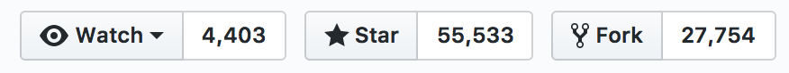
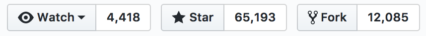
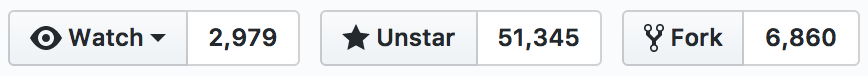
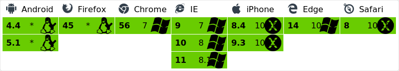
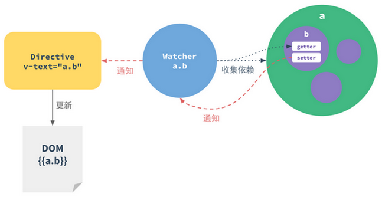
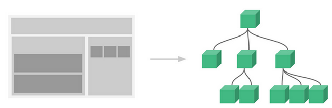

Vue.js入门
叶潘孟2017-4-26
SPA ?
Single-Page Application
单页Web应用，是一种只有一个web页面的网页应用程序或网站。在一个单页面应用中，HTML、JavaScript、CSS都在第一次页面加载中获取，或者通常根据用户动作动态加载合适的资源并按需加入到网页中。
单页Web程序的出现是富客户端发展的必然结果
单页面应用的优点
- 1.良好的交互体验
- 2.减轻服务器压力
- 3.分离前后端关注点
- 4.结合RESTful架构，后端API多端通用
- 5.告别切图仔！！！
单页面应用的缺点
- 1.首屏加载耗时
- 2.不利于SEO
- 3.开发、学习成本较高
前端框架发展
 AngularJs
AngularJs

AngularJS诞生于2009年，由Misko Hevery 等人创建，后为Google所收购，已经被用于Google的多款产品当中。AngularJS有着诸多特性，最为核心的是：MVC、模块化、自动化双向数据绑定、语义化标签、依赖注入等等
语法特点
Hello { { yourName } }
 React
React

React 起源于 Facebook 的内部项目，因为该公司对市场上所有 JavaScript MVC 框架，都不满意，就决定自己写一套，用来架设 Instagram 的网站。做出来以后，发现这套东西很好用，就在2013年5月开源了。
ReactDOM.render()
var names = ['Alice', 'Emily', 'Kate'];
ReactDOM.render(
{
names.map(function (name) {
return Hello, {name}!
})
}
,
document.getElementById('example')
);
JSX语法：HTML 语言直接写在 JavaScript 中，不加任何引号


Vue.js作者：尤雨溪
- 本科毕业于Colgate University
- 后在Parsons设计学院获得Design & Technology艺术硕士学位
- 现任职于纽约Google Creative Lab
开发初衷
MVVM数据绑定

MVVM的本质是通过数据绑定链接View和Model，让数据的变化自动映射为视图的更新
{ { message} }
var app = new Vue({
el: '#app',
data: {
message: 'Hello Vue!'
}
})
Vue常用指令
Now you see me
Now you don't
{ { item.text } }

数据观测的实现
Vue.js利用了ES5的Object.defineProperty方法，直接将原生数据对象的属性改造为getter和setter，在这两个函数内部实现依赖的收集和触发
Vue组件系统
组件（Component）是 Vue.js 最强大的功能之一。组件可以扩展 HTML 元素，封装可重用的代码。在较高层面上，组件是自定义元素， Vue.js 的编译器为它添加特殊功能。在有些情况下，组件也可以是原生 HTML 元素的形式，以 is 特性扩展。
A custom component!
框架生态
- 路由系统：Vue-router
- 状态管理：Vuex
- 数据请求：Vue-resource/axios
- 脚手架：Vue-cli
- 资源库：awesome-vue
UI组件库
移动端
vux
PC端
Element UI
iview
Talking is cheap,
Show me your code.
- Weex：用Vue.js通三端（iOS、Android、HTML5）
- PWA（Progressive Web App）
- 微信小程序
- WebGL、Web VR
- More...
听说JS要统治世界了？
开个玩笑
Thanks！